Демонстрационные примеры
Программные функции библиотеки для подсчета количества объектов интереса по данным видеопотока в реальном масштабе времени и определения курса роботизированного аппарата на объект интереса
Пример использования функций модуля размещен в папке examples/objcourse библиотеки. В папке files находятся необходимые входные данные для демонстрации работы функции:
ship.onnx – обученная модель в формате YOLO5;
ship.names – текстовый файл с именами классов объектов интереса.
Создание экземпляра класса осуществляется с помощью вызова конструктора:
mrcv::ObjCourse *objcourse = new mrcv::ObjCourse(modelPath.u8string(), classPath.u8string());
В качестве входных данных конструктор принимает полный путь к модели, полный путь к файлу с классами модели и размеры детектора.
Тестирование проводилось на синтетическом изображении — модели кадра видеопотока, содержащего объект интереса.
Режим отображения меток используется только в режиме отладки при включенном флаге IS_DEBUG_LOG_ENABLED.
Результат работы детектора:

Для выполнения основных функций модуля используются вызовы методов класса ObjCourse, как показано ниже.
Подразумевается, что тестовое изображение предварительно загружено в переменную cv::Mat frameShip.
// Подсчет объектов
int objCount = objcourse->getObjectCount(frameShip);
// Расчет курса
float objAngle = objcourse->getObjectCourse(frameShip, 640, 80);
Метод getObjectCount принимает на вход кадр видеофрейма в формате cv::Mat
и возвращает количество найденных объектов.
Метод getObjectCourse принимает кадр видеофрейма, разрешение камеры по горизонтали (в пикселях) и угол обзора камеры,
возвращая угловую поправку на текущий курс с учетом знака смещения.
Пример использования программных функций библиотеки для автоматической настройки параметров обучения нейросети с архитектурой YOLOv5
Пример использования функций модуля размещен в папке examples/configuration библиотеки.
Генерация конфигурационного файла для YOLOv5s с 80 классами представлена ниже
try
{
mrcv::YOLOv5GenerateHyperparameters(mrcv::YOLOv5Model::YOLOv5s,
640, 640, "yolov5s-hyp.yaml", 80);
}
catch (const std::exception &ex)
{
std::cerr << "Error: " << ex.what() << std::endl;
}
При успешной генерации без исключений, содержимое созданного конфигурационного файла yolov5s-hyp.yaml приведено ниже:
weight_decay: 0.00050000000000000001
box: 0.075000000000000011
cls: 0.52500000000000002
cls_pw: 1
obj: 1
obj_pw: 1
anchor_t: 4
fl_gamma: 0.17004397181410924
Здесь можно заметить обозначенные ранее параметры, которые необходимы для обучения моделей детекторов и классификаторов YOLOv5.
Пример использования программных функций библиотеки для автоматической генерации конфигурационных файлов для моделей детекторов и классификаторов
Пример использования функций модуля размещен в папке examples/configuration библиотеки.
Генерация конфигурационного файла для YOLOv5s с 80 классами представлена ниже:
try
{
mrcv::YOLOv5GenerateConfig(mrcv::YOLOv5Model::YOLOv5s, "yolov5s-coco.yaml", 80);
}
catch (const std::exception &ex)
{
std::cerr << "Error: " << ex.what() << std::endl;
}
При успешной генерации без исключений, содержимое созданного конфигурационного файла yolov5s-coco.yaml приведено ниже:
nc: 80
depth_multiple: 0.33000000000000002
width_multiple: 0.5
anchors:
- [10, 13, 16, 30, 33, 23]
- [30, 61, 62, 45, 59, 119]
- [116, 90, 156, 198, 373, 326]
backbone:
[[-1, 1, Conv, [64, 6, 2, 2]],
[-1, 1, Conv, [128, 3, 2]],
[-1, 3, C3, [128]],
[-1, 1, Conv, [256, 3, 2]],
[-1, 6, C3, [256]],
[-1, 1, Conv, [512, 3, 2]],
[-1, 9, C3, [512]],
[-1, 1, Conv, [1024, 3, 2]],
[-1, 3, C3, [1024]],
[-1, 1, SPPF, [1024, 5]]]
head:
[[-1, 1, Conv, [512, 1, 1]],
[-1, 1, nn.Upsample, [None, 2, nearest]],
[[-1, 6], 1, Concat, [1]],
[-1, 3, C3, [512, False]],
[-1, 1, Conv, [256, 1, 1]],
[-1, 1, nn.Upsample, [None, 2, nearest]],
[[-1, 4], 1, Concat, [1]],
[-1, 3, C3, [256, False]],
[-1, 1, Conv, [256, 3, 2]],
[[-1, 14], 1, Concat, [1]],
[-1, 3, C3, [512, False]],
[-1, 1, Conv, [512, 3, 2]],
[[-1, 10], 1, Concat, [1]],
[-1, 3, C3, [1024, False]],
[[17, 20, 23], 1, Detect, [nc, anchors]]]
Здесь можно заметить обозначенные ранее атрибуты, которые необходимы для конфигурации моделей детекторов и классификаторов YOLOv5.
Пример использования программных функций библиотеки для автоматического обучения нейронной сети для детекции и идентификации объектов
Пример использования модуля размещён в папке examples/detectorautotrain библиотеки.
В папке files находятся входные данные для демонстрации работы функции:
autodetector.pt– обученная модель в формате YOLO4_tiny;voc_classes.txt– текстовый файл с именами классов объектов интереса;изображения в формате
.jpgдля обучения и валидации модели;файлы меток классов к изображениям в формате
.xml.
Для выполнения основных функций модуля используются вызовы методов класса mrcv::Detector, как это показано ниже.
Сперва необходимо объявление экземпляра класса mrcv::Deteсtor detector, после чего вызов метода
detector.Initialize(devID, width, height, nameListPath) для инициализации модели.
Входные аргументы:
devID– ID устройства, на котором будет исполняться функционал модели, ID < 0 – исполнение на CPU, ID >= 0 – исполнение на GPU с выбором конкретного устройства;width × height– разрешение входного изображения после масштабирования;nameListPath– путь к текстовому файлу с именами классов объектов интереса.
Метод AutoTrain библиотеки принимает:
путь к обучающей и валидационной выборкам;
тип изображения в этих выборках (например,
.jpg,.pngи др.);векторы значений гиперпараметров: количества эпох, размеров батча, скорости обучения;
путь к предварительно обученной модели и путь для сохранения итоговой модели.
Пример использования методов:
mrcv::Detector detector;
detector.Initialize(0, 416, 416, vocClassesPath.string());
detector.AutoTrain(
datasetPath.u8string(),
".jpg",
{ 10, 15, 30 },
{ 4, 8 },
{ 0.001, 1.0E-4F },
pretrainedModelPath.u8string(),
modelSavePath.u8string()
);
Тестирование производилось на взятой из открытого источника выборке, состоящей из 3224 изображений для обучения и 907 изображений для валидации.
Результат работы функции автоматического обучения:
Training with epochs: 10, batch size: 4, learning rate: 0.001
Epoch: 0, Training Loss: 9.74461
Epoch: 0, Valid Loss: 1.067471
...
Epoch: 9, Training Loss: 0.498858
Epoch: 9, Valid Loss: 0.688751
Training with epochs: 10, batch size: 4, learning rate: 0.0001
...
Epoch: 9, Training Loss: 0.295652
Epoch: 9, Valid Loss: 0.416149
Training with epochs: 10, batch size: 8, learning rate: 0.001
...
Epoch: 9, Training Loss: 0.169151
Epoch: 9, Valid Loss: 0.1421471
Training with epochs: 10, batch size: 8, learning rate: 0.0001
...
Epoch: 9, Training Loss: 0.1198785
Epoch: 9, Valid Loss: 0.1454247
Training with epochs: 15, batch size: 4, learning rate: 0.001
...
Epoch: 14, Training Loss: 0.367891
Epoch: 14, Valid Loss: 0.549404
Training with epochs: 15, batch size: 4, learning rate: 0.0001
...
Epoch: 14, Training Loss: 0.208666
Epoch: 14, Valid Loss: 0.542158
Training with epochs: 15, batch size: 8, learning rate: 0.001
...
Epoch: 14, Training Loss: 0.1019419
Epoch: 14, Valid Loss: 0.1554376
Training with epochs: 15, batch size: 8, learning rate: 0.0001
...
Epoch: 14, Training Loss: 0.0939302
Epoch: 14, Valid Loss: 0.1397133
Training with epochs: 30, batch size: 4, learning rate: 0.001
...
Epoch: 29, Training Loss: 0.2111429
Epoch: 29, Valid Loss: 0.655723
Training with epochs: 30, batch size: 4, learning rate: 0.0001
...
Epoch: 29, Training Loss: 0.0957526
Epoch: 29, Valid Loss: 0.643364
Training with epochs: 30, batch size: 8, learning rate: 0.001
...
Epoch: 29, Training Loss: 0.1048645
Epoch: 29, Valid Loss: 0.1644395
Training with epochs: 30, batch size: 8, learning rate: 0.0001
...
Epoch: 29, Training Loss: 0.0414545
Epoch: 29, Valid Loss: 0.173299
Best hyperparameters:
Epochs: 30
Batch size: 8
Learning rate: 0.001
Best validation loss: 0.127668
Epoch: 0, Training Loss: 0.1494259
Epoch: 0, Valid Loss: 0.1652038
...
Epoch: 29, Training Loss: 0.1037284
Epoch: 29, Valid Loss: 0.136483
Вывод: Из текста вывода видно, что за время работы функции было проведено 13 итераций обучения, включая итоговую. При заданных значениях гиперпараметров минимальное значение функции потерь (0.127668) было достигнуто с использованием следующих параметров:
Количество эпох: 30
Размер батча: 8
Темп обучения: 0.001
Время обучения составило 6 часов 13 минут при указанных параметрах.
Пример использования программных функций библиотеки для детектирования аварийной ситуации технологического объекта
Пример использования функций модуля размещён в папке examples/emergency_detector библиотеки.
В папке files представлены выборки с данными о повреждёнными трубами (pipes).
Из выборки взяты изображения для демонстрации работы функции. В той же директории находятся входные данные:
pipes/test/burst_augment_56_blur45_jpg.rf.714ba15fef8cf1f9ebcc19bbdb07dd2a.jpg– изображение с повреждённым объектом;emergency_detector.pt– обученная модель в формате YOLO4_tiny;pipes/voc_classes.txt– текстовый файл с именами классов, характеризующих возможные аварийные ситуации.
Рисунок А.4.3 – Тестовое изображение для демонстрации работы функции:
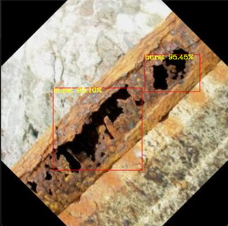Использование функций
Для выполнения основных функций модуля используются вызовы методов класса mrcv::Detector, как это показано ниже.
Сначала необходимо создать экземпляр класса mrcv::Detector detector, затем вызвать метод
detector.Initialize(devID, width, height, nameListPath) для инициализации модели.
Аргументы метода инициализации:
devID– ID устройства, на котором будет исполняться модель:ID < 0– исполнение на CPU,ID >= 0– на GPU с выбором конкретного устройства;width × height– разрешение входного изображения после масштабирования;nameListPath– путь к файлу с именами классов объектов интереса.
Предполагается, что тестовое изображение предварительно загружено в переменную cv::Mat image:
// Детекция объектов на изображении
detector.Predict(image, true, 0.1, 0.3);
Параметры метода Predict:
cv::Mat image– изображение;true– флаг отображения ограничивающих рамок (bounding box);0.1– порог доверительности (confidence threshold);0.3– порог для NMS (Non-Maximum Suppression).
Фрагмент технического лога
15:44:02 | INFO | Device is GPU 0
15:44:02 | INFO | Model initializing is complete!
15:44:03 | INFO | Starting detector...
15:44:03 | INFO | Boxes detected: 0 with 0.954479 confidence
15:44:03 | INFO | Boxes detected: 1 with 0.930952 confidence
15:44:03 | INFO | Detector is complete!
Из текста лога и на рисунке А.4.3 видно два обнаруженных места повреждения трубы. Доверительная вероятность обнаружения составила более 90%. Время работы:
на системе с GPU: ~12,2 минуты;
на системе с CPU: более 2 часов.
Пример использования программных функций библиотеки для сопровождения объекта по данным системы компьютерного зрения с применением нейросетевого подхода к предсказанию положения объекта
Пример использования функций модуля размещен в папке examples/roi библиотеки.
Создание экземпляра класса осуществляется с помощью вызова конструктора:
mrcv::Predictor predictor(hiddenSize, layersNum, predictorTrainPointsNum, imgSize, maxDeviation, deviationThreshold, avgScale);
В качестве входных данных конструктор принимает:
размер скрытых слоев сети,
количество слоев сети,
количество точек, на которых проводится первичное обучение сети,
размер изображения, на котором сопровождается объект интереса,
максимальное отклонение предсказания от предсказываемой величины,
количество успешных предсказаний, при котором считается, что сеть достаточно натренирована,
размер выборки для определения скользящего среднего предсказания.
Для выполнения требований по быстродействию сети и точности предсказания определены следующие оптимальные значения параметров нейронной сети:
размер скрытых слоев сети: 20–25
количество слоев сети: 1
максимальное отклонение сильно варьируется в зависимости от характера перемещения объекта на изображении. Для быстрых объектов оптимально значение не меньше 150–200, для медленных — 10–30.
Остальные параметры либо зависят от контекста применения, либо предварительно инициализируются с оптимальными значениями.
Тестирование проводилось на синтетических данных — предсказывались траектории синусоиды и окружности. Эти виды траекторий выбраны из-за простоты настройки и их нелинейной зависимости параметров, что усложняет предсказание и имитирует реальные условия.
Обучение модели производится методом:
predictor.trainLSTMNet(coordinates);
Метод принимает параметр с набором пар координат размером pointsNumber.
В основном цикле программы для определения следующего положения объекта вызывается:
predictor.predictNextCoordinate();
Он возвращает пару следующих координат объекта.
После получения реальной координаты вызывается:
predictor.continueTraining(realCoordinate);
Он принимает текущую реальную координату и выполняет дообучение модели.
Дополнительно можно запрашивать состояние сети и среднее отклонение предсказания:
predictor.isWorkState();
Метод возвращает true, если ошибка предсказаний остаётся ниже заданного порога failsafeDeviation в течение failsafeDeviationThreshold итераций.
Пример предсказания положения для траекторий синуса и окружности представлены на рисунке А.4.4:
| 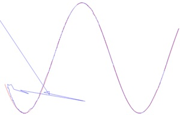 | 
|
{kind=link}
а) б)
Рисунок А.4.4 – Пример работы модуля предсказания положения для траекторий (а) – движение по синусу; (б) – движение по окружности
По результатам выполнения методов предсказания координат на примерах видно: по мере дообучения предсказанные координаты (траектория синего цвета) приближаются к реальным (траектория красного цвета). Среднее отклонение составило 7 пикселей. Время предсказания — 33.3 мс, что соответствует 30 кадрам/с видеопотока.
Пример использования программных функций библиотеки для построения региона интереса (ROI) с использованием предсказания перемещения объекта интереса на исходном изображении
Пример использования функций модуля размещен в папке examples/roi библиотеки.
Создание объекта класса Optimizer производится при помощи конструктора:
mrcv::Optimizer optimizer(sampleSize, epochs);
В качестве входных данных конструктор принимает:
количество наборов синтетических данных для обучения;
количество эпох обучения сети.
В основном цикле программы, когда состояние предиктора положения становится true
(predictor.isWorkState()), необходимо вызвать метод:
roiSize = optimizer.optimizeRoiSize(
realCoordinate,
predictedCoordinate,
objectSize,
predictor.getMovingAverageDeviation()
);
Если значение размера региона интереса (ROI) отлично от нуля, значит определение размера прошло успешно, и размер ROI соответствует критерию:
roiSize ≥ objectSize * 1.1
Проверим работу оптимизатора для объекта размером 100 пикселей, данные о его перемещении получим из примера работы предиктора:
Optimized ROI size: 153.083
Выведем регион интереса с координатами центра, полученными при помощи методов класса Predictor
и размером, полученным при помощи класса Optimizer. Для получения ROI воспользуемся функцией:
roi = mrcv::extractROI(imgR, toPoint(predictedCoordinate), {roiSize, roiSize});
В функцию передаются:
исходное изображение,
предсказанные координаты объекта интереса,
оптимальный размер ROI.
Регион имеет квадратную форму, поскольку объект представляет собой окружность диаметром 100 пикселей. Полученный ROI представлен на рисунке А.4.5:
| 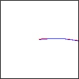 | 
|
{kind=link}
(а) (б)
Рисунок А.4.5 – Результат вычисления региона интереса (ROI) (а) – траектория; (б) – объект
Вывод: Из результатов построения следует, что размер ROI подобран оптимально, так как при работе предиктора объект не выходил за пределы региона интереса.
Пример использования программных функций библиотеки для предварительной обработки изображений (автоматическая коррекция контраста и яркости, исправление геометрических искажений)
Пример использования функций модуля размещён в папке examples/imgpreprocessing/ библиотеки.
Для подготовки входных параметров функции предобработки preprocessingImage() производится загрузка исходного изображения:
cv::Mat imageIn;
cv::Mat imageOut;
imageIn = cv::imread("./files/seabed.png", cv::IMREAD_COLOR);
imageOut = imageIn.clone();
mrcv::writeLog("\t imageIn channels = " + std::to_string(imageIn.channels()));
Формируется список применяемых методов предобработки:
std::vector<mrcv::METOD_IMAGE_PERPROCESSIN> metodImagePerProcessinBrightnessContrast = {
mrcv::METOD_IMAGE_PERPROCESSIN::NOISE_FILTERING_01_MEDIAN_FILTER,
mrcv::METOD_IMAGE_PERPROCESSIN::BALANCE_CONTRAST_10_LAB_CLAHE,
mrcv::METOD_IMAGE_PERPROCESSIN::SHARPENING_02,
mrcv::METOD_IMAGE_PERPROCESSIN::BRIGHTNESS_LEVEL_DOWN,
mrcv::METOD_IMAGE_PERPROCESSIN::NONE,
mrcv::METOD_IMAGE_PERPROCESSIN::CORRECTION_GEOMETRIC_DEFORMATION,
};
Далее, применяется функция предобработки:
int state = mrcv::preprocessingImage(imageOut, metodImagePerProcessin, "./files/fileCameraParameters.xml");
Сохранение результата в файл:
cv::String imageOutputFilePath = "./files/outImages/test.png";
cv::imwrite(imageOutputFilePath, imageOut);
mrcv::writeLog("\t результат преодобработки сохранён: " + imageOutputFilePath);
Отображение результатов на экране:
double CoefShowWindow = 0.5;
cv::resize(imageIn, imageIn, cv::Size(double(imageIn.cols * CoefShowWindow),
double(imageIn.rows * CoefShowWindow)), 0, 0, cv::INTER_LINEAR);
cv::resize(imageOut, imageOut, cv::Size(double(imageOut.cols * CoefShowWindow),
double(imageOut.rows * CoefShowWindow)), 0, 0, cv::INTER_LINEAR);
cv::namedWindow("imageIn", cv::WINDOW_AUTOSIZE);
imshow("imageIn", imageIn);
cv::namedWindow("imageOut", cv::WINDOW_AUTOSIZE);
imshow("imageOut", imageOut);
cv::waitKey(0);
Результаты предобработки подводных изображений:

Пример фрагмента log-файла во время запуска примера:
16:59:43 | INFO | === НОВЫЙ ЗАПУСК ===
16:59:43 | INFO | загружено изображение: ./files/img02.jfif :: 960x600x3
16:59:43 | INFO | imageIn.channels = 3
16:59:43 | INFO | NOISE_FILTERING_01_MEDIAN_FILTER, state = 0
16:59:43 | INFO | BALANCE_CONTRAST_10_LAB_CLAHE, state = 0
16:59:43 | INFO | SHARPENING_02, state = 0
16:59:43 | INFO | BRIGHTNESS_LEVEL_DOWN, state = 0
16:59:43 | INFO | CORRECTION_GEOMETRIC_DEFORMATION, state = 0
16:59:43 | INFO | Предобработка изображения завершена (успешно)
16:59:43 | INFO | результат предобработки сохранён: ./files/img02.jfif
Пример использования программных функций библиотеки для компьютерного стереозрения для определения координат 3D точек в сегментах идентифицированных объектов и восстановления 3D сцены по двумерным изображениям
Пример использования функций модуля размещён в папке examples/3dscene библиотеки.
L1000.bmp, R1000.bmp – набор исходных изображений;
(66a)_(960p)_NewCamStereoModule_Air.xml – xml-файл с параметрами камеры.
Подготовка входных данных
Для подготовки входных параметров функции readCameraStereoParametrsFromFile()
необходимо загрузить исходные изображения и параметры камеры.
Также необходимо провести инициализацию параметров, как указано в примере использования.
Основная функция
Для определения координат 3D точек в сегментах идентифицированных объектов и восстановления 3D сцены по двумерным изображениям используется функция:
state = mrcv::find3dPointsInObjectsSegments(
inputImageCamera01, inputImageCamera02, cameraParameters,
inputImageCamera01Remap, inputImageCamera02Remap,
settingsMetodDisparity, disparityMap, points3D, replyMasks,
outputImage, outputImage3dSceene, parameters3dSceene,
filePathModelYoloNeuralNet, filePathClasses,
limitOutPoints, limitsOutlierArea
);
Результаты работы
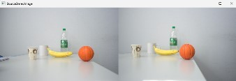{kind=link}


 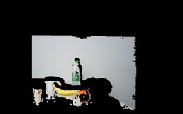
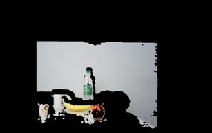
{kind=link}
Фрагмент лог-файла
Ниже приведён фрагмент из лог-файла библиотеки во время запуска примера использования:
14:51:16 | INFO | === НОВЫЙ ЗАПУСК ===
14:51:16 | INFO | 1. Загрузка изображений из файла (успешно)
14:51:16 | INFO | загружено изображение: ./files/L1000.bmp :: 960x600x3
14:51:16 | INFO | загружено изображение: ./files/R1000.bmp :: 960x600x3
14:51:16 | INFO | 2. Загрузка параметров стереокамеры из файла (успешно)
14:51:16 | INFO | A1. Выравнивание изображения камера 01 (успешно)
14:51:16 | INFO | A2. Облако 3D точек сцены найдено (успешно)
14:51:16 | INFO | points3D.numPoints0 = 312718
14:51:16 | INFO | points3D.numPoints = 8018
...
14:51:17 | INFO | 4.8 Вывод проекции 3D сцены на экран (успешно)
Пример использования программных функций библиотеки для служебных утилит работы с видеокамерами, в т.ч. калибровка (одиночная камера и стереокамера)
Пример использования функций модуля представлен в папках:
examples/recordvideo, examples/calibration и examples/disparitymap.
Пример логирования
Функция логирования создает файл с расширением *.log в одноимённой папке log,
которая создается автоматически в корневой директории. Имя файла формируется как dd-mm-yyyy.log.
Типы сообщений:
enum class LOGTYPE
{
DEBUG, // Отладка DEBG
ERROR, // Ошибка ERRR
EXCEPTION, // Исключение EXCP
INFO, // Информация INFO
WARNING // Предупреждение WARN
};
Примеры вызова логирования:
mrcv::writeLog("Create folder: " + rightFramePath.u8string());
mrcv::writeLog("Can't open the camera ID = " + std::to_string(rightCameraID), mrcv::LOGTYPE::ERROR);
Пример содержимого лог-файла:
16:48:21 | DEBG | Images count: 5
16:48:21 | INFO | Path to images: calibration_images
16:48:21 | DEBG | Chessboard columns count: 9
16:48:21 | DEBG | Chessboard rows count: 6
16:48:21 | INFO | Square size: 20.100000
16:58:47 | INFO | Path to file: c:\SourceCode\code-ai-400393\build\examples\calibr
Пример записи видео
std::thread videoThread(mrcv::recordVideo, 0, 7, "sarganCV", mrcv::CODEC::XVID);
std::thread counterThread(consoleCounter);
videoThread.join();
counterThread.join();
После выполнения будут созданы файлы вида: sarganCV_12102024_000124.avi.
Пример калибровки камеры
Параметры задаются в файле config.dat:
image_count = 50
folder_name = "calibration_images"
keypoints_c = 9
keypoints_r = 6
square_size = 24
После калибровки создается файл calibration.xml и сохраняются изображения в папках L и R:
0.png
1.png
...
N.png
На рисунке А.4.14 представлен процесс интерактивной калибровки:

(а) – консольный вывод приложения;
| 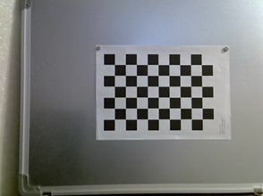 | 
|
{kind=link}
б) в)
Рисунок А.4.14 – Процесс интерактивной калибровки камеры: (б) – захват калибровочного шаблона левой камерой; (в) – захват шаблона правой камерой.
Пример построения карты диспаратности
Вызов функции:
mrcv::disparityMap(
disparitymap, imageLeft, imageRight,
minDisparity, numDisparities, blockSize,
lambda, sigma,
disparityType, colorMap,
true, true
);
Параметры функции:
disparitymap– выходная карта (cv::Mat);imageLeft,imageRight– входные изображения;minDisparity– рекомендовано16;numDisparities– рекомендовано160;lambda,sigma– параметры фильтрации (sigma≈15);disparityType– варианты:ALL,BASIC_DISPARITY,BASIC_HEATMAP,FILTERED_DISPARITY,FILTERED_HEATMAP;colorMap– например:cv::COLORMAP_JET,VIRIDIS,TURBO,HOT;saveToFile– сохранять ли карту;showImages– отображать ли окна.
Результаты работы представлены на рисунке А.4.15:
| 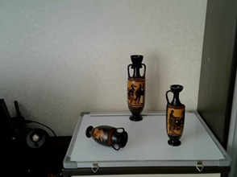 | 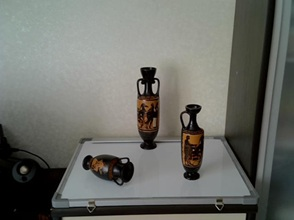 |
| 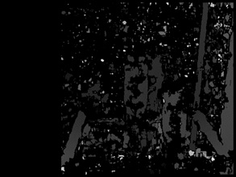 | 
|

|
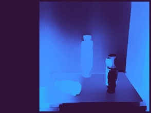 |
{kind=link}
{kind=link}
{kind=link}
{kind=link}
а) LEFT б) RIGHT в) BASIC_DISPARITY г) BASIC_HEATMAP д) FILTERED_DISPARITY е) FILTERED_HEATMAP
Рисунок А.4.15 – Построение карты диспаратности: (а) – левое изображение; (б) – правое изображение; (в) – карта в оттенках серого; (г) – цветная карта (TURBO); (д) – отфильтрованная карта в сером; (е) – отфильтрованная цветная карта.
Примечание: Параметры карты должны быть настроены под конкретную стереопару. При использовании значений по умолчанию возможна потеря детализации.
Пример использования программных функций библиотеки для автоматического создания датасетов для обучения нейросети
Пример использования функций модуля размещен в папке examples/imgcollection библиотеки.
Для запуска примера необходимо использовать основную функцию:
getImagesFromYandex
Описание параметров
Функция принимает следующие входные параметры:
std::string queryString– строка поискового запроса;int minWidth– минимальная ширина изображения;int minHeight– минимальная высота изображения;std::string templateName– шаблон имени файла;std::string outputFolder– путь к папке для сохранения изображений;bool separateDataset– разделить выборку по папкам (true/false);unsigned int trainsetPercentage– процент изображений для тренировочного набора;unsigned int countFoto– максимальное количество изображений;bool money– режим использования API (платный/бесплатный);std::string key– ключ доступа Yandex Cloud;std::string secretKey– секретный ключ Yandex Cloud.
Пример вызова функции:
int result = mrcv::getImagesFromYandex(
queryString,
minWidth,
minHeight,
templateName,
outputFolder,
separateDataset,
trainsetPercentage,
countFoto,
money,
key,
secretKey
);
Пример использования программных функций библиотеки для интеллектуальной сегментации объектов интереса на изображениях
Пример использования функций модуля размещен в папках examples/segmentationtest и examples/segmentationtrain библиотеки.
В папке file находятся необходимые входные данные:
test– изображения для проверки правильности обучения сети;train– изображения для обучения сети;weights– файлы с весами обученной модели.
Для подготовки набора данных использовались полигональные аннотации произвольной формы в формате VOC. Тестовые данные были размечены с использованием программы Labelme.
Пример размеченного файла (формат .json):
{
"version": "4.5.7",
"flags": {},
"shapes": [
{
"label": "ship",
"points": [
[158.83582089552237, 831.3134328358209],
...
[164.8059701492537, 871.6119402985074]
],
"group_id": null,
"shape_type": "polygon",
"flags": {}
}
]
}
Обучение модели
Для обучения модели используется функция:
void Train(float learningRate, unsigned int epochs, int batchSize, std::string train_valPath, std::string imageType, std::string savePath);
Параметры метода Train:
learningRate– скорость обучения;epochs– количество эпох;batchSize– размер батча;train_valPath– путь к изображениям;imageType– тип изображений (напр.,.jpg,.png);savePath– путь к сохранению весов модели.
Прогнозирование
Для выполнения сегментации используется функция Predict.
Пример вызова:
segmentor.Initialize(-1, 512, 320, {"background","ship"}, "resnet34", "../weights/resnet34.pt");
segmentor.LoadWeight("../weights/segmentor.pt");
segmentor.Predict(image, "ship");
Результат – маска изображения, в которой по пикселям определяется наличие объекта.
Оценка качества
Для количественной оценки эффективности методов сегментации использовалась Dice Coefficient Loss, которая показала результат:
Dice Score: 0.92%
Пример использования программных функций библиотеки для реализации модифицированного алгоритма выделения связных компонент для кластеризации облака 3D точек
Пример использования функций модуля размещен в папке examples/clustering библиотеки.
Реализует алгоритмы кластеризации 3D-точек на основе данных стереокамер.
Загрузка данных
Загружает данные для кластеризации из файла.
void mrcv::DenseStereo::loadDataFromFile(const std::string& filename)
Выполнение кластеризации
Выполняет кластеризацию загруженных данных.
void mrcv::DenseStereo::makeClustering()
Пример использования программных функций библиотеки для предварительной обработки изображений для модуля аугментации данных
Пример использования функций модуля размещен в папке examples/augmentation библиотеки. Пример использования функций модуля размещен в папке examples/augmentation библиотеки.
Модуль включает три основных этапа обработки данных: загрузку изображений, указание методов аугментации, сохранение результатов преобразования.
На первом этапе осуществляется загрузка входных изображений в вектор с использованием функции cv::imread.
std::vector<cv::Mat> inputImagesAugmetation(10);
inputImagesAugmetation[0] = cv::imread("files\\img0.jpg", cv::IMREAD_COLOR);
inputImagesAugmetation[1] = cv::imread("files\\img1.jpg", cv::IMREAD_COLOR);
...
inputImagesAugmetation[9] = cv::imread("files\\img9.jpg", cv::IMREAD_COLOR);
На этапе задания методов аугментации задаются названия методов, которые будут применяться к входным изображениям. В качестве методов преобразования могут выступать: поворот изображения на 45, 90, 270 или 315 градусов; зеркальное отображение по горизонтали, вертикали или по обоим направлениям. Ниже приведены методы аугментации изображений:
std::vector<mrcv::AUGMENTATION_METHOD> augmetationMethod = {
mrcv::AUGMENTATION_METHOD::ROTATE_IMAGE_90,
mrcv::AUGMENTATION_METHOD::FLIP_HORIZONTAL,
mrcv::AUGMENTATION_METHOD::FLIP_VERTICAL,
mrcv::AUGMENTATION_METHOD::ROTATE_IMAGE_45,
mrcv::AUGMENTATION_METHOD::ROTATE_IMAGE_315,
mrcv::AUGMENTATION_METHOD::ROTATE_IMAGE_270,
mrcv::AUGMENTATION_METHOD::FLIP_HORIZONTAL_AND_VERTICAL};
Далее осуществляется вызов функции аугментации в формате
int state = mrcv::augmetation(inputImagesAugmetation, outputImagesAugmetation, augmetationMethod);
После выполнения всех операций, модифицированные изображения сохраняются на диск с использованием функции cv::imwrite(ss.str(), resultImage)
Результат работы функции аугментации :


Пример использования программных функций библиотеки для полуавтоматической разметки для аугментации данных с помощью нейронной сети
Пример использования функций модуля размещен в папке examples/objcourse библиотеки.
В папке files находятся необходимые входные данные для демонстрации работы:
images– папка с датасетом для обучения автоэнкодера;result– папка для сохранения результатов работы;ship.onnx– обученная модель в формате YOLOv5;ship.names– текстовый файл с именами классов.
Генерация изображения
Функция генерации изображения, выдающая итоговый тензор, вызывается следующим образом:
torch::Tensor gentensor = mrcv::neuralNetworkAugmentationAsTensor(
imagePath.u8string(), height, width, 200, 2, 3000, 32, 3E-4
);
Чтобы получить изображение после выполнения в виде объекта cv::Mat:
cv::Mat genImage = mrcv::neuralNetworkAugmentationAsMat(
imagePath.u8string(), height, width, 200, 2, 3000, 32, 3E-4
);
Параметры:
путь к изображению;
height,width– размеры изображения;200– размерность скрытого пространства;2– размерность латентного пространства;3000– размер пакета;32– количество итераций;3E-4– коэффициент скорости обучения.
Результат работы функции приведен на рисунке А.4.20:
| 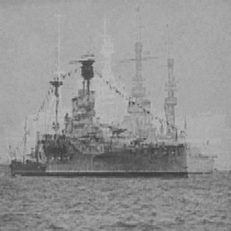 | 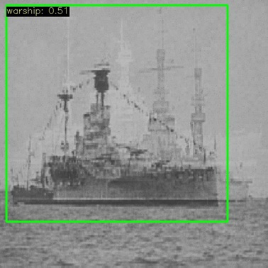 |
{kind=link}
{kind=link}
Рисунок А.4.20 – Сгенерированное изображение после работы функции
Полуавтоматическая разметка
Функция полуавтоматической разметки вызывается следующим образом:
mrcv::semiAutomaticLabeler(
colorGenImage, height, width,
resultPath.u8string(),
modelPath.u8string(),
classPath.u8string()
);
Параметры:
цветное изображение;
height,width– размеры изображения;путь к папке для сохранения результата;
путь к модели и классам YOLO.
Также доступна перегрузка функции для работы с уже сохранённым изображением:
mrcv::semiAutomaticLabeler(
colorGenImage, height, width,
resultPath.u8string(),
modelPath.u8string(),
classPath.u8string()
);
После выполнения в папке result будет файл с разметкой в формате YOLO и изображение с нанесённой меткой.
Результат работы функции приведён на рисунке А.4.21:
Рисунок А.4.21 – Размеченное изображение после работы функции
Содержание файла разметки:
0 0.435937 0.422656 0.825 0.807813
Первое значение – номер класса, остальные четыре – координаты (x, y, width, height) в относительных значениях.
Фрагмент технического лога
22:56:28 | INFO | Loaded Images: 21
22:56:29 | INFO | Training...
22:57:18 | INFO | Training is DONE!
22:57:18 | INFO | Encoding...
22:57:18 | INFO | Decoding...
22:57:18 | INFO | Generated image is DONE!
22:58:55 | INFO | Confidences: 0.508250
22:58:55 | INFO | Inference time: 0.455822
22:58:56 | INFO | Labeling image is DONE!
Из текста лога видно, что время обнаружения составило 0.45 сек.
Пример использования программных функций библиотеки для утилиты обработки и визуальной разметки изображений модуля аугментации данных
Пример использования функций модуля размещен в папке examples/labeler библиотеки.
Код, вызывающий утилиту разметки, представлен ниже:
std::string inputDir = "images"; // Папка с изображениями
std::string outputDir = "labels"; // Папка для сохранения разметки
mrcv::YOLOv5LabelerProcessing(inputDir, outputDir);
Результат работы функции показан на рисунке А.4.22:

Рисунок А.4.22 – Размеченное изображение после работы функции
При запуске кода появляется интерактивное окно для мультиклассовой разметки изображений с возможностью сохранения и корректировки данных.
Пример использования программных функций библиотеки для генерации новых изображений для формирования обучающей выборки нейросетевого модуля аугментации данных
Для демонстрации работы библиотеки был реализован тестовый сценарий, обрабатывающий 10 исходных изображений. Пример использования функций модуля размещен в папке examples/augmentation библиотеки.
Генерация аугментированных изображений обеспечивается тестовой программой, представленной ниже:
// Тест пакетной аугментации
mrcv::BatchAugmentationConfig config;
config.keep_original = true;
config.total_output_count = 100;
config.random_seed = 42;
config.method_weights = {
{mrcv::AUGMENTATION_METHOD::FLIP_HORIZONTAL, 0.2},
{mrcv::AUGMENTATION_METHOD::ROTATE_IMAGE_90, 0.2},
{mrcv::AUGMENTATION_METHOD::BRIGHTNESS_CONTRAST_ADJUST, 0.3},
{mrcv::AUGMENTATION_METHOD::PERSPECTIVE_WARP, 0.2},
{mrcv::AUGMENTATION_METHOD::COLOR_JITTER, 0.1},
};
std::vector<cv::Mat> batchOutput;
state = mrcv::batchAugmentation(inputImagesCopy, batchOutput, config,
"files" FILE_SEPARATOR "batch_output");
В результате выполнения было создано 100 новых изображений (включая 10 оригиналов). Распределение методов:
20% горизонтальных отражений,
20% поворотов на 90°,
30% коррекций яркости/контраста,
20% перспективных искажений,
10% цветовых вариаций.
Среднее время обработки составило около 15 мс на изображение (Intel Core i7-9700K).

|
|

|
|

|
{kind=link}
{kind=link}
{kind=link}
Подписи к изображениям: - Верхний ряд: color_jitter - Средний ряд: brightness - Нижний ряд: perspective_transform
Рисунок А.4.23 – Часть результатов пакетной аугментации
В результате был автоматически сгенерирован лог-файл с детализацией операций. Менее подробный вывод о вероятностном распределении методов приведен ниже:
Batch augmentation completed. Total: 90 images.
brightness: 27 images (30%)
color_jitter: 9 images (10%)
flip_h: 18 images (20%)
perspective: 18 images (20%)
rotate_90: 18 images (20%)
Визуальный анализ результатов подтвердил сохранение семантического содержания изображений, естественность примененных преобразований, отсутствие артефактов обработки.
Реализованная библиотека позволяет преобразовывать исходные изображения в их вариации с различными типами аугментации, что значительно увеличивает объем и разнообразие обучающих данных. Это особенно важно для глубокого обучения, где качество моделей напрямую зависит от репрезентативности тренировочного набора.
Архитектурные решения обеспечивают:
простоту добавления новых методов,
возможность комбинирования методов,
высокую производительность благодаря оптимизациям OpenCV,
надежность за счет комплексной обработки ошибок и валидации параметров.
Пример использования программных функций библиотеки для комплексирования данных, поступающих от сенсоров различных видов
Пример использования модуля размещён в папке examples/sensorsfusion библиотеки.
В папке files находятся входные данные для демонстрации работы функции:
/Images/L_ГГ_ММ_ДД_ЧЧ_ММ_СС.png– изображения, поступившие с системы технического зрения подводного аппарата;imuLog.csv– файл с данными от инерциальных датчиков подводного аппарата;usblLog.csv– файл с данными от USBL модема;fuseData.yaml– итоговый файл с объединёнными данными.
Основной метод fuseSensorData библиотеки принимает на вход пути к данным с указанных сенсоров, путь к директории для сохранения изображений, а также путь и имя файла, в который будут сохранены итоговые векторы. Последний параметр – флаг визуализации, при установленном значении выводится изображение с меткой и информацией о расположении устройства.
Пример вызова метода:
int res = mrcv::fuseSensorData(
usblDataPath.u8string(),
imuDataPath.u8string(),
datasetPath.u8string(),
fuseTupleSavePath.u8string(),
true
);
Тестирование производилось на собранных в рамках натурных испытаний данных.
Формат данных с USBL-модема представлен следующим образом:
2025-02-18 15:41:01 X(m) Y(m) Z(m) Azimuth(deg) Local_depth(m) Remote_depth(m) Propagation_time(s) rs(m) rh(m)
2025-02-18 15:41:36 1.846667 26.369645 2.460589 4.000000 0.000000 2.000000 0.017699 26.548500 26.473059
Формат данных с IMU:
Date,AccelX,AccelY,AccelZ,GyroX,GyroY,GyroZ
2025-02-18 15:41:01,0.01,0.02,9.80,0.001,0.002,0.0003
Комплексированные данные имеют следующее представление:
timestamp: 1739882496000
accel: [0, 0.01, 9.8100000000000005]
gyro: [0.0011000000000000001, 0.0020999999999999999, 0.00020000000000000001]
position: [0, 0, 0]
relativeCoords: [1.8466670000000001, 26.369644999999998, 2.4605890000000001]
azimuth: 4
localDepth: 0
remoteDepth: 2
propagationTime: 0.0176989995
rs: 26.5485001
rh: 26.4730587
image: L_25-02-18_15-41-41.png
На рисунке А.4.24 представлена визуализация результата с нанесённой меткой:
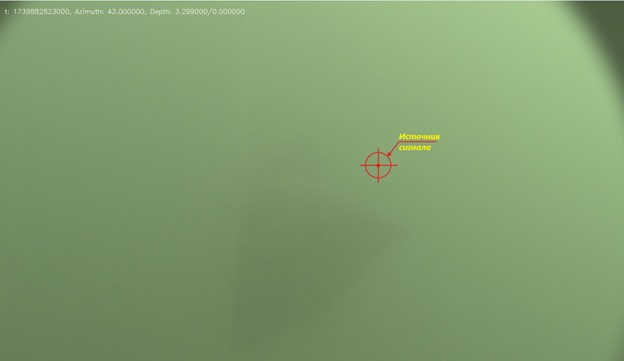Рисунок А.4.24 – Визуализация результата
Пример использования программных функций библиотеки для формирования вектора признаков по данным, поступающим от сенсоров различных видов
Пример использования функций модуля размещён в папке examples/extractfeature библиотеки.
В папке files представлены выборки с объединёнными данными и изображениями от системы технического зрения:
/Images/L_ГГ_ММ_ДД_ЧЧ_ММ_СС.png– изображения с системы технического зрения (СТЗ);fuseData.yaml– объединённые данные с нескольких сенсоров;extractedData.yaml– файл с итоговыми векторами признаков.
Для выполнения основных функций модуля используется вызов метода extractFeatureVector, как показано ниже.
В качестве входных данных функция принимает:
путь к файлу с объединёнными данными,
путь к директории изображений,
директорию для сохранения итогового вектора.
Пример вызова функции:
int res = mrcv::extractFeatureVector(
fuseTupleSavePath.u8string(),
datasetPath.u8string(),
extracedFeaturesPath.u8string()
);
Ниже приведён фрагмент технического лога библиотеки при работе указанных функций:
12:42:27 | INFO | Loaded 90 fused data entries from YAML
12:42:30 | INFO | Saved 90 feature vectors to ~\mrcv\build\examples\extractfeature\files\extractedData.yaml
Пример вектора извлечённых признаков:
features: [0.500923336, 0.513184786, 0.501230299, 0.0111111114, 0, 0.00200000009, 0.0176989995, 0.5, 0.500500023, 0.990500093, 0, 0, 0, 0.500175059, 0.500334203, 0.500031829, 0, 0, 0, 0.0898506716, 0.172127262, 55, 1.3717422e-06, 2.55976875e-06]
Пример использования программных функций библиотеки для интеграции функций библиотеки для системы технического зрения морского робототехнического комплекса с одиночной камерой
Пример использования функций модуля размещён в папке examples/visionmodule библиотеки.
Для демонстрации работы библиотеки реализован тестовый сценарий, в котором происходит:
захват изображения с камеры,
предобработка,
детекция объекта,
получение маски,
определение курса на объект.
Для визуализации работы библиотеки в примере выводятся все последовательные этапы обработки, как показано на рис. А.4.25.

Рисунок А.4.25 – Результаты работы модуля
Инициализация модуля осуществляется с помощью конструктора:
mrcv_vision::VisionModule vision_module(
model_path,
class_path,
segmentor_weights,
camera_params
);
Входные параметры конструктора:
model_path (const std::string&) – путь к файлу модели детекции объектов;
class_path (const std::string&) – путь к файлу с названиями классов для детекции;
segmentor_weights (const std::string&) – путь к файлу весов сегментатора;
camera_params (const std::string&) – путь к файлу с параметрами калибровки камеры (матрица камеры, коэффициенты искажений).
Пример использования программных функций библиотеки для интеграции функций библиотеки для системы технического зрения морского робототехнического комплекса со стереокамерой
Пример использования функций модуля размещён в папке examples/stereovisionmodule библиотеки.
Для демонстрации работы библиотеки был реализован тестовый сценарий, в котором происходит захват изображения с двух камер, производится предобработка, детекция объекта, получение маски, определение курса на объект и построение карты диспаратности. Для визуализации работы библиотеки в примере сделан вывод всех последовательных этапов обработки как это показано на рис. А.4.26.

Рисунок А.4.26 – Результаты работы модуля
Для инициализации модуля используется конструктор:
mrcv_vision::StereoVisionModule stereo_vision_module(
model_path,
class_path,
segmentor_weights,
stereo_params
);
Входные параметры модуля: – model_path (const std::string&) – путь к файлу модели детекции объектов. – class_path (const std::string&) – путь к файлу с названиями классов для детекции. – segmentor_weights (const std::string&) – путь к файлу весов сегментатора. – stereo_params (const std::string&) – путь к файлу с параметрами калибровки камеры (матрица камеры, коэффициенты искажений).
Пример использования программных функций библиотеки для определения пространственного расположения объектов интереса
Пример использования функций модуля размещён в папке examples/3dscene библиотеки. В папке files находятся необходимые входные данные для демонстрации работы функции:
Видео файлы (камера движется, меняя ракурс, снимая объекты интереса под разными углами и на разном расстоянии):
cv::String videoPathCamera01 = "./files/SV_01_left_20.mp4"; // путь к видео файлу камера 01
cv::String videoPathCamera02 = "./files/SV_02_right_20.mp4"; // путь к видео файлу камера 02
Путь к файлу параметров модели камеры:
const std::string pathToFileCameraParametrs = "./files/(66a)_(960p)_NewCamStereoModule_Air.xml";
Файлы модели нейронной сети для обнаружения и распознания объектов:
const std::string filePathModelYoloNeuralNet = "./files/NeuralNet/yolov5n-seg.onnx";
const std::string filePathClasses = "./files/NeuralNet/yolov5.names";
Обработка данных выполняется для каждого кадра видео последовательности.
Вывод результата работы примера программы производится в виде записи видео файлов и диагностической информации в лог-файле:
DisparityMap.mp4 – видео файл с результатами построения карты диспаратности для поиска 3D точек сцены.
3dSceene.mp4 – видео файл с результатами поиска 3D точек сцены.
Result.mp4 – видео файл с результатами обнаружения и распознания объектов и результатами определения координат 3D точек в сегментах идентифицированных объектов.
ResultPrimitives.mp4 – видео файл с результатами оценки параметров и формы идентифицированных объектов в виде прорисовки проекций примитивов.
Рисунок А.4.27 – Видео файл с результатами построения карты диспаратности
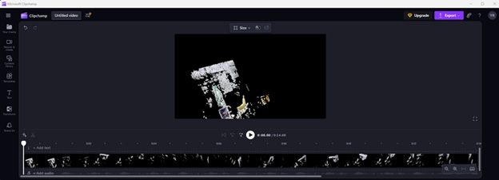Рисунок А.4.28 – Видео файл с результатами поиска 3D точек сцены
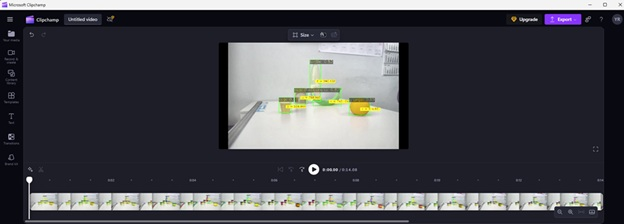Рисунок А.4.29 – Видео файл с результатами обнаружения и распознания объектов и результатами определения координат 3D точек в сегментах идентифицированных объектов
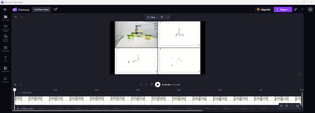Рисунок А.4.30 – Видео файл с результатами оценки параметров и формы идентифицированных объектов в виде прорисовки проекций примитивов
Ниже приведён фрагмент из log-файла библиотеки во время запуска примера использования:
18:23:42 | INFO | === НОВЫЙ ЗАПУСК ===
18:23:43 | INFO | 1.1 Чтение видео из файла Камера 01 (успешно)
18:23:43 | INFO | количество кадров файла Камера 01 = 324
...
18:31:29 | INFO | 11. Прорисовка примитивов идентифицированных объектов заданной формы (успешно)
18:31:30 | INFO | 11.2 Запись результирующего видео примитивов (успешно)
Пример использования программных функций библиотеки для реализации алгоритма оценки параметров идентифицированных объектов заданной формы
Пример использования функций модуля размещён в папке examples/3dscene библиотеки. В папке files находятся необходимые входные данные для демонстрации работы функции:
L1000.bmp, R1000.bmp – набор исходных изображений;
(66a)_(960p)_NewCamStereoModule_Air.xml – xml-файл с параметрами камеры.
В примере использованы функции библиотеки для предыдущих задач:
Функция предобработки изображений:
preprocessingImage()– функции предварительной обработки изображений (автоматическая коррекция контраста и яркости, резкости).Функция получения облаков 3D точек обнаруженных объектов по исходным изображениям:
find3dPointsInObjectsSegments()– функции для определения координат 3D точек в сегментах идентифицированных объектов и восстановления 3D сцены по двумерным изображениям.
После получения облаков 3D точек объектов используются описанные выше функции для решения задачи оценки параметров идентифицированных объектов заданной формы:
detectObjectPrimitives()
drawPrimitives()
Затем в примере реализован вывод результатов в виде изображений (через функцию библиотеки showImage()) и данных в лог-файле.
Вывод результата работы примера программы представлен на рис. А.4.31 – А.4.34:
Рисунок А.4.31 – Фотография экспериментального стенда и стереопара со стереокамеры

Рисунок А.4.32 – Результат обнаружения объектов с координатой по z (по дальности)
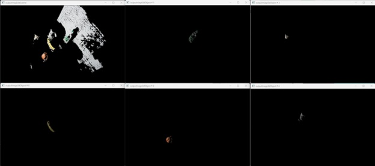Рисунок А.4.33 – 3D сцена и облака 3D точек обнаруженных объектов
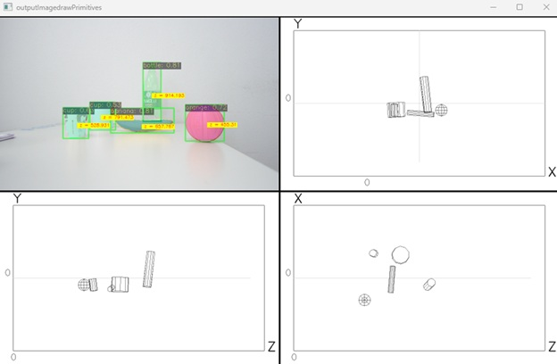Рисунок А.4.34 – Изображение обнаруженных объектов и изображения с проекциями примитивов объектов
Ниже приведён фрагмент из log-файла библиотеки во время запуска примера использования:
13:36:51 | INFO | === НОВЫЙ ЗАПУСК ===
13:36:51 | INFO | 1. Загрузка изображений из файла (успешно)
13:36:51 | INFO | загружено изображение: ./files/L1000.bmp :: 960x600x3
...
13:36:53 | INFO | 6.5 Проекция 3D сцены на 2D изображение для вывода на экран (успешно)
На рис. А.4.31 – А.4.34 и из текста лога можно сделать вывод, что осуществлена оценка параметров идентифицированных объектов заданной формы.
Пример использования программных функций библиотеки для предварительной обработки изображений (удаление шумов, морфологическая обработка)
Пример использования функций модуля размещен в папке examples/morphologyImage библиотеки. В папке files находятся необходимые входные данные для демонстрации работы функции:
closing.png– пример изображения для наглядной демонстрации морфологического замыкания;gradient.png– пример для наглядной демонстрации выделения границ объектов на изображении;j.png– пример изображения для наглядной демонстрации морфологической эрозии;opening.png– пример изображения для наглядной демонстрации морфологического размыкания.
В качестве выходных данных функция создает файл out.png, которое является результирующим изображением.
Примеры работающих алгоритмов обработки изображений представлены на рис. А.4.35.

|

|
Изображение до обработки |
Изображение после применения морфологического размыкания |
| 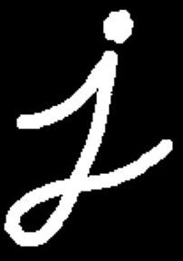 | 
|
Изображение до обработки |
Изображение после применения морфологического градиента |
{kind=link}
Рисунок А.4.35 – Демонстрация работы алгоритмов морфологической обработки
Для запуска примера необходимо использовать основную функцию morphologyImage:
int result = mrcv::morphologyImage(image, out, mrcv::METOD_MORF::OPEN, morph_size);
В качестве входных параметров функция принимает параметры:
cv::Mat image– исходное изображение;std::string out– путь для нового файла;mrcv::METOD_MORF metod– метод преобразования;int morph_size– размер преобразования;
Результатом работы функции будет создан новый файл изображения с примененными морфологическими преобразованиями.
Пример использования программных функций библиотеки для анализа изображений для выявления изменения состояния подводных археологических объектов
Пример использования функций модуля размещен в папке examples/compareImages библиотеки. В папке files находятся два тестовых файла для демонстрации работы функции.
В качестве входных данных функция возвращает значение в процентном соотношении, насколько эти два изображения идентичны. Для запуска примера необходимо использовать основную функцию compareImages.
В качестве входных параметров функция принимает параметры:
cv::Mat img1– первое изображение;cv::Mat img2– второе изображение;bool methodCompare– метод сравнения.
Пример использования функции:
double result = mrcv::compareImages(img1, img2, 1);
Результатом работы функции будет дан числовой ответ от 0 до 1:
Диапазон выходных значений:
1.0– полная корреляция (гистограммы идентичны);0.0– отсутствие линейной зависимости.
На рис. А.4.36 представлены тестовые изображения, использовавшиеся для тестирования работы функции.

|
|
Исходное изображение |
Измененное изображение |
{kind=link}
Рисунок А.4.36 – Исходные изображения для тестирования функции сравнения изображений
Результат работы алгоритма показал коэффициент корреляции 0.94 схожести.
Пример использования программных функций библиотеки для реализации алгоритма оценки геометрических размеров (габаритов) видимой части идентифицированных объектов
Пример использования функций модуля размещён в папке examples/geometry библиотеки.
В соответствии со структурой информационного кадра облака 3D точек в качестве входных данных использовались файлы в текстовом формате, в котором данные разделены с помощью табуляции. Фрагмент файла с данными приведен на рис. А.4.38.

Рисунок А.4.38 – Исходный файл с данными облака 3D точек
Для загрузки данных из облака 3D точек и парсинга данных в соответствующие структуры использовалась функция
/**
* @brief Загрузка данных облака 3D точек для расчета геометрии объекта
* @param pathtofile - полный путь к файлу с данными
* @param cluster - номер кластера для выборки (по умолчанию = 0)
* @param rows - количество строк cvMat объекта (по умолчанию = 0)
* @param cols - количество столбцов cvMat объекта (по умолчанию = 0)
* @param norm - флаг нормализации данных, если true, данные будут нормализованы (по умолчанию = false)
* @return std::vector<Cloud3DItem> вектор точек 3D облака
*/
MRCV_EXPORT std::vector<Cloud3DItem> geometryLoadData(std::string pathtofile, int cluster = 0, int rows = 0, int cols = 0, bool norm = false);
Выход функции – это вектор значений в формате структуры Cloud3DItem, имеющей вид:
struct Cloud3DItem
{
int U; // Координата X на изображении
int V; // Координата Y на изображении
double X; // Координата X в пространстве
double Y; // Координата Y в пространстве
double Z; // Координата X в пространстве
int R; // Цвет токчи R
int G; // Цвет токчи G
int B; // Цвет токчи B
int C; // Номер кластера
};
Непосредственный расчет геометрических размеров (габаритов) видимой части идентифицированного объекта осуществляется с помощью функции geometryCalculateSize
/**
* @brief Вычисление геометрических характеристик объекта, заданного облаком 3D-точек
* @param std::vector<Cloud3DItem> cloud3D - облако 3D-точек объекта
* @param double* l - длина bounding box
* @param double* w - ширина bounding box
* @param double* h - высота bounding box
* @param double* length - длина осевой линии
* @param double* width - ширина осевой линии
* @param double* distance - растояние от камеры до центра масс объекта
* @return int - код ошибки {0 - нет ошибок}
*/
MRCV_EXPORT int geometryCalculateSize(std::vector<Cloud3DItem> cloud3D, double* l, double* w, double* h, double* length, double* width, double* distance);
Пример вызова функций приведен ниже, соответствующий пример использования расположен в папке examples/geometry/main.cpp
// Путь к файлу с данными
std::filesystem::path currentPath = std::filesystem::current_path();
std::filesystem::path fileName = "points3D.dat";
std::filesystem::path pathToFile = currentPath / "data" / fileName;
// Загрузка исходных данных
std::vector<mrcv::Cloud3DItem> cloud3D = mrcv::geometryLoadData(pathToFile.string(), 5);
// Рассчет геометрии точек
double L, W, H, Length, Width, Distance;
mrcv::geometryCalculateSize(cloud3D, &L, &W, &H, &Length, &Width, &Distance);
Результат работы функции приведен на рис. А.4.39 – А.4.40
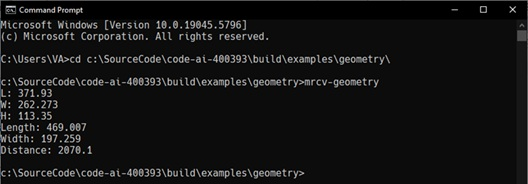Рисунок А.4.39 – Консольный вывод расчетных значений оценки геометрических размеров (габаритов) объекта интереса
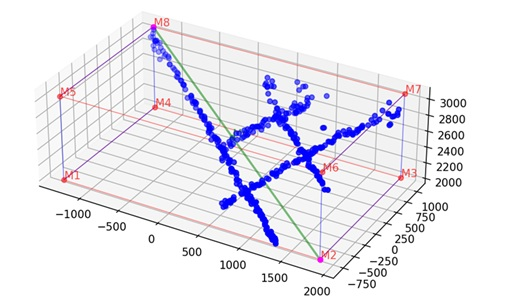Рисунок А.4.40 – Визуализация параллелепипеда, в который может быть вписано облако точек объекта интереса
В случае, если объект интереса представляет из себя вытянутую фигуру (например фрагмент трубы подводного газопровода), как это показано на рис. А.4.41, оценку размеров нужно делать на основании значений параметров length и width.

Рисунок А.4.41 – Визуализация параллелепипеда, для облака точек фрагмента трубы подводного газопровода
Серия экспериментов определения геометрических габаритов эталонных объектов с помощью разработанных функций, проведённых в опытовом бассейне, показала, что точность определения геометрических размеров варьировалась в диапазоне 90–95%.
Пример использования адаптированных программные функций библиотеки для детекции и идентификации объектов с использованием процессоров ARM
Пример использования модуля размещён в папке /python/examples/detectorautotrain библиотеки. В папке files находятся входные данные для демонстрации работы функции:
autodetector.pt– обученная модель в формате YOLO4_tiny;voc_classes.txt– текстовый файл с именами классов объектов интереса;изображения в формате
.jpgдля обучения и валидации модели;файлы меток классов к изображениям в формате
.xml.
Для выполнения основных функций модуля используются вызовы методов класса Detector, как это показано ниже. Сперва необходимо объявление экземпляра класса:
detector = mrcv.Detector()
после чего вызывается метод:
detector.Initialize(width, height, nameListPath)
для инициализации модели.
В качестве входных данных функция инициализации принимает следующие аргументы:
- width × height – разрешение входящего в модель изображения после масштабирования;
- nameListPath – путь к текстовому файлу с именами классов объектов интереса.
Основной метод AutoTrain библиотеки принимает на вход путь к обучающей и валидационной выборкам, тип изображения в этих (например, .jpg, .png и другие), векторы значений гиперпараметров: количества эпох, размеров батча, скорости обучения, а также путь к предварительно обученной и сохранению итоговой моделей.
Пример использования методов:
from mrcv import Detector
# Пути к файлам
images_path = "vae/files/images" # Папка с изображениями (.jpg)
names_path = "vae/files/xml" # Путь для меток классов
model_path = "vae/files/autodetector.pt" # Путь к обученной модели YOLO4_tiny
class_path = "vae/files/voc_classes.txt" # Путь к файлу с именами классов
detector = mrcv.Detector()
detector.Initialize(416, 416, class_path)
detector.AutoTrain(
images_path, # Папка с изображениями и метками
".jpg", # Расширение изображений
[10, 15, 30], # Количество эпох
[4, 8], # Размер батча
[0.001, 1.0e-4], # Скорость обучения
model_path, # Путь к предобученной модели
names_path # Путь для сохранения итоговой модели
)
Пример использования адаптированных программных функций библиотеки для детекции и идентификации объектов с использованием технологии CUDA
Пример использования модуля размещён в папке examples/detectorautotrain библиотеки. В папке files находятся входные данные для демонстрации работы функции:
autodetector.pt– обученная модель в формате YOLO4_tiny;voc_classes.txt– текстовый файл с именами классов объектов интереса;изображения в формате
.jpgдля обучения и валидации модели;файлы меток классов к изображениям в формате
.xml.
Для выполнения основных функций модуля используются вызовы методов класса mrcv::Detector, как это показано ниже. Сперва необходимо объявление экземпляра класса:
mrcv::Detector detector;
после чего вызывается метод:
detector.InitializeCuda(devID, width, height, nameListPath);
для инициализации модели.
Входные параметры метода инициализации:
- devID – ID устройства, на котором будет исполняться функционал модели. ID < 0 – исполнение на CPU, ID >= 0 – исполнение на GPU с выбором конкретного устройства согласно его ID в системе;
- width × height – разрешение входящего в модель изображения после масштабирования;
- nameListPath – путь к текстовому файлу с именами классов объектов интереса.
Основной метод AutoTrain библиотеки принимает на вход:
- путь к обучающей и валидационной выборкам,
- тип изображения (например, .jpg, .png и др.),
- векторы значений гиперпараметров: количества эпох, размеров батча, скорости обучения,
- путь к предварительно обученной модели,
- путь для сохранения итоговой модели.
Пример использования методов:
mrcv::Detector detector;
detector.InitializeCuda(0, 416, 416, vocClassesPath.string());
detector.AutoTrain(
datasetPath.u8string(), // Путь к обучающему датасету
".jpg", // Тип изображений
{10, 15, 30}, // Количество эпох
{4, 8}, // Размер батча
{0.001, 1.0E-4F}, // Скорость обучения
pretrainedModelPath.u8string(), // Путь к предобученной модели
modelSavePath.u8string() // Путь сохранения итоговой модели
);
Адаптация функций библиотеки под CUDA позволила достичь ускорения вычислений до 6–8 раз по сравнению с выполнением на CPU, обеспечив выполнение требований технического задания. Рекомендуется использовать видеокарты с объёмом памяти не менее 8 ГБ и регулярно обновлять зависимости для поддержки новых версий CUDA.